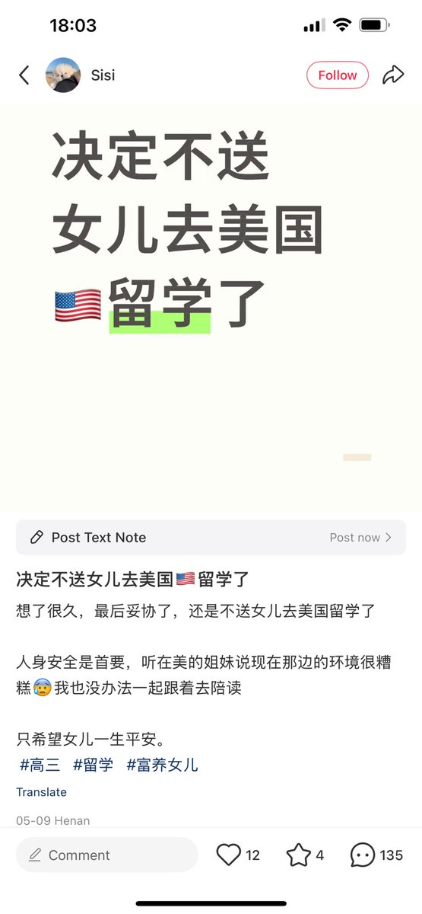

RedFox（2代目）🇲🇴🇭🇰
@FoxRed695449
@Qiangguofanzei 就美國的這反中以及反留學生的政策...現在的確不適合去美國
不僅特朗普政已經府暫時停止國際學生的簽證預約
另一方面，就連已經取得簽證的都無法倖免於難：5月28日晚間，美國國務卿魯比奧（Marco Rubio）宣告，美國將開始「積極」（aggressively）撤銷中國留學生的簽證
現在去美國才是增加不穩定因素..

墙国反贼
@Qiangguofanzei
这下认知真决定人生了。。。 https://t.co/4ESfreSyS2